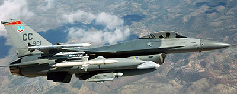
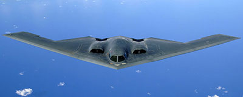
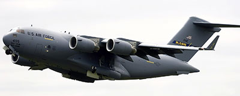
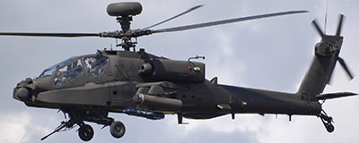
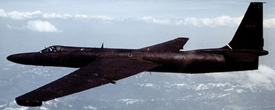

Military Aircraft Flights (MAF) is a one of a kind company with a one of a kind opportunity. MAF has an exclusive agreement with the U.S. military to offer civilian flight in today's modern military aircraft. MAF gives you the choice of taking a ride in a fighter jet, bomber, transport aircraft, helicopter, or training aircraft. Flight are offered at all major air show within the United States of America.
Founded in 1997, Military Aircraft Flights has arranged for more than 10,000 trips for our customers. Our customers have flown in aircraft from the F-16 Fighting Falcons fighter jet to the C-17 Globemaster III transport aircraft to the AH-64 Apache attack helicopter. Customers will have a choice of at least four aircraft at any air show. The aircraft available does vary at each air show.
Join Our Email List
Join our email list to keep up to date on the air show where we will be offering flights. We will also send you periodic emails about the aircraft we use and how to book the adventure of a lifetime. As a member of our email list you will also get discounts on our apparel and occasional special rates on our flights.

Fighter Aircraft
Fighter aircraft are designed to control airspace. Control is established by using air-to-air missiles and/or machine guns. In the early days of fighter jets air combat, called dog fighting, was conducted with the aircraft in close proximity of each other due to the limited range and capability of the weapons.
Today, fighter aircraft can engage targets that are miles away and, even though the distance has increased, technology allows today's weapons to be more accurate and more deadly. Fighter jets can fly at speeds greater than the sound of speed (767 miles/hour) and typically more than twice the sound of speed.
Some fighters, such as the F/A-18 Super Hornet, operate as attack aircraft. Attack aircraft target air-to-ground missiles to precise ground location and the precession of attack aircraft is greater than what a bomber is capable of delivering.

Bombers
The role of bombing aircraft is to deliver a large payload of ordinance against enemy locations. The payload is typically a mixer of air-to-ground missiles, free-falling bombs, and precession-guided bombs. Bombers are classified by a number variables: day or night; light, medium, or heavy; tactical or strategic; and conventional or nuclear. A bomber may be classified by 1 or more of these variables.
Bombers typically fly at a slower speed than most other military aircraft, but some bombers are designed to fly faster than the speed of sound (supersonic). The amount of ammunition, payload, that a bomber can carry depends on the type of bomber and the payload can be more than 100,000 lbs. Bombers are usually equipped with a machine gun for protection against enemy aircraft.

Transport Aircraft
Transport aircraft, as the name implies, transports troops, weapons, and other equipment to and from air bases near combat zones. The equipment transported can be vary from motor vehicles to tanks to helicopters. Another role of transport aircraft is to deliver paratroopers into a combat zone where the paratroopers jump from the transport plane.
Transport aircraft are large like bombers with the cargo area configured to carry people and equipment instead of bombs. Similar to bombers, transport aircraft fly at slower speed due to their size and the extreme weight of the payload.
Transport aircraft also perform a unique role as a tanker aircraft. Tanker aircraft are used to refuel other aircraft while in flight. The tanker aircraft's cargo air is configures with large fuel tanks and the back of the aircraft has a long probe that extends connecting the tanker with the aircraft it is refueling.

Helicopters
Military helicopters perform multiple missions, including front line attack aircraft, troop carrier, search and rescue, and anti-submarine warfare. Helicopters used as attack aircraft, such as the AH-64 Apache, provide close air support to troops on the front lines as well as function as anti-tank aircraft. Carrying troops is one of the most common missions of helicopter from carrying troops to and from combat zones to shuttling the President of the United States.
Helicopters are used in all branches of the military and are the most versatile aircraft in the military's arsenal. Due to the unique mobility and flexibility of helicopters, helicopters are major tool in any combat scenario. Helicopters are classified based on weight in one of three categories; light, medium, or heavy.

Training Aircraft
Training aircraft in the military have a role different than all other military aircraft, training aircraft are used to teach flying skills to pilots and to test new technology. Due to the high cost, construction and operation, of other types of military aircraft, trainers are used in place of other military aircraft to train pilots.
Another role of training aircraft is to act as enemy aircraft in training exercises. Since most countries do not have aircraft from other countries, trainers are used in place of aircraft from other countries. The trainer's capabilties are matched, as best as possible, to the foreign country's aircraft.